Cómo jugar?
BASTA PARA MI© es un juego que se basa en el popular "Tuti Fruti". A continuación un breve instructivo para entender su funcionamiento.
Paso 1
Una vez logueado ir a "Ver Juegos".
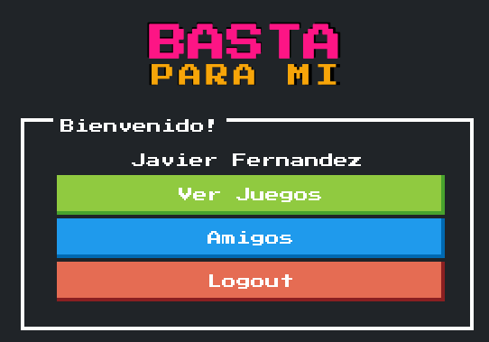
Paso 2
En "Buscar juego" indicar el ID y presionar "Buscar".
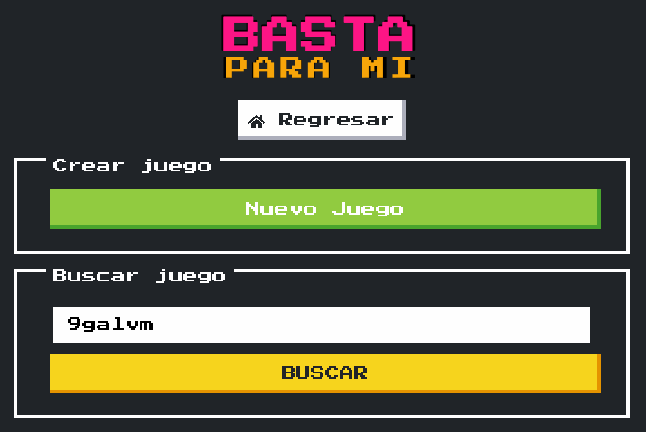
Paso 3
Se validará el ID.
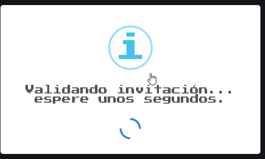
Paso 4
Si todo salió bien, se agregará el usuario al juego.
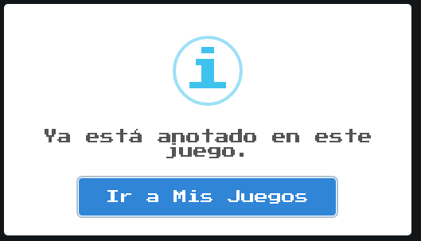
Paso 5
Ahora el juego aparece en "Mis Juegos".
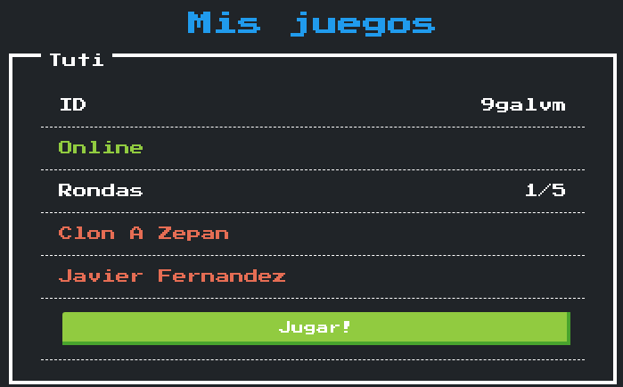
Para comenzar, apretar el botón de "Jugar"
Paso 6
Al ingresar se accede a la Sala de Espera para esperar que se conecten el resto de los jugadores. Su estado se ve en el recuadro.
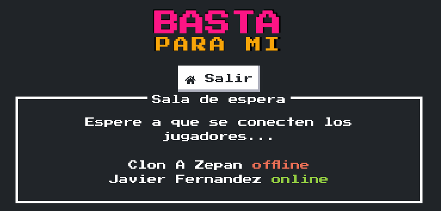
Paso 7
Cuando todos están conectados comienza el juego.
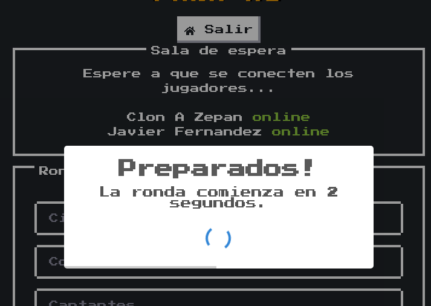
Paso 8
Se indica el número de ronda y la letra correspondiente.
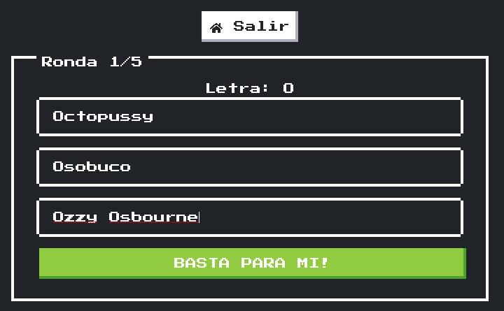
Cargar las respuestas en los bloques de texto y al terminar presionar el botón de "Basta para mi!".
IMPORTANTE: Si algún jugador se desconecta durante la partida no se podrá realizar el "Basta para mi" hasta que vuelva a conectarse.
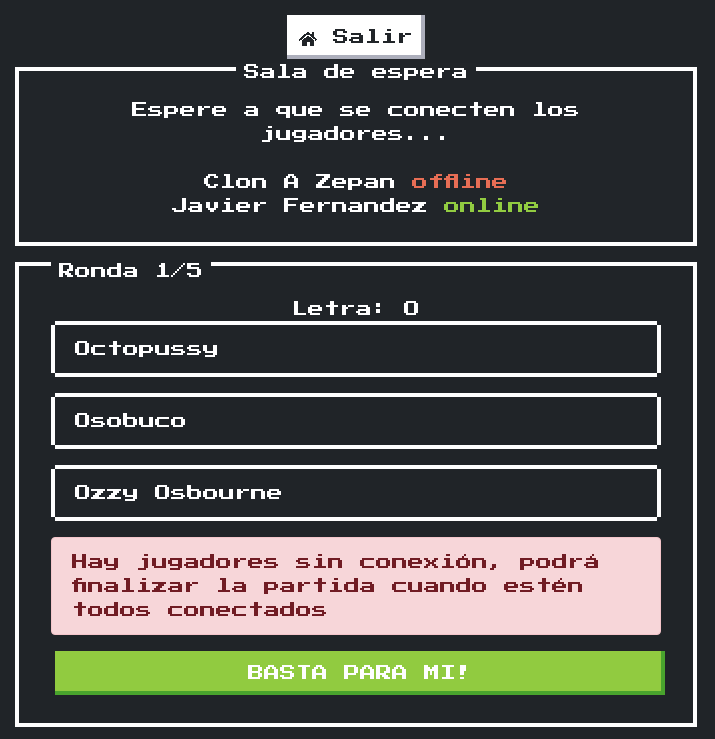
Paso 9
Se debe confirmar la acción.
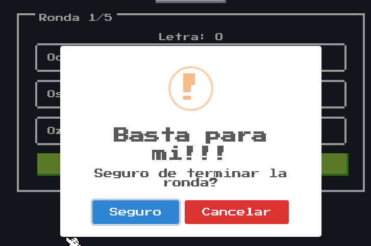
El primer jugador en presionar BASTA PARA MI termina la ronda.
Paso 10
Al confirmar se bloquean las respuestas y se indica el jugador que finalizó primero.
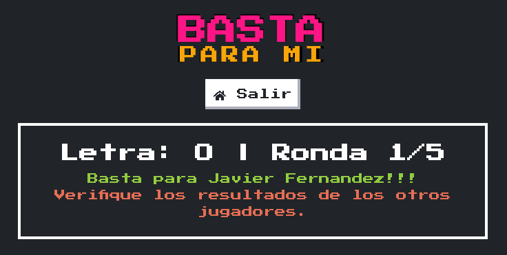
Paso 11
Se muestran las respuestas del propio jugador.
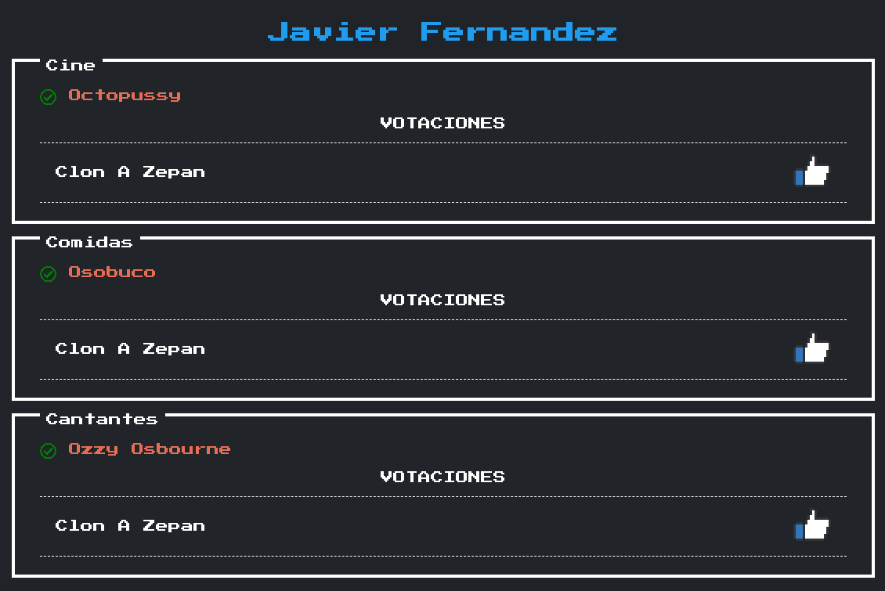
Paso 12
Y las respuestas del resto de los jugadores.
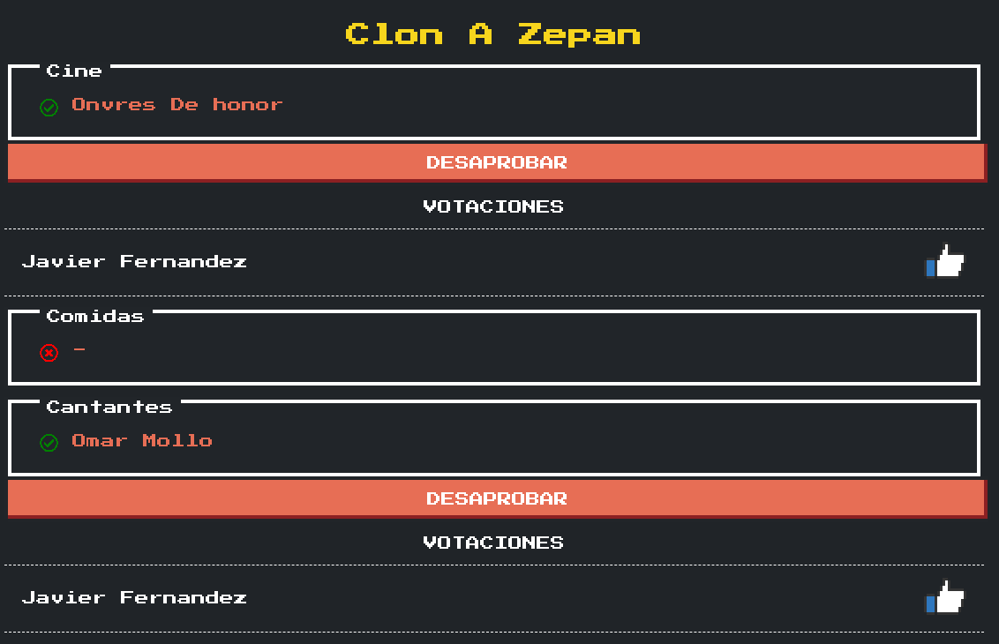
Se pueden aprobar y desaprobar las respuestas.
Paso 13
Si la mayoría desaprueba, la respuesta es marcada como no válida
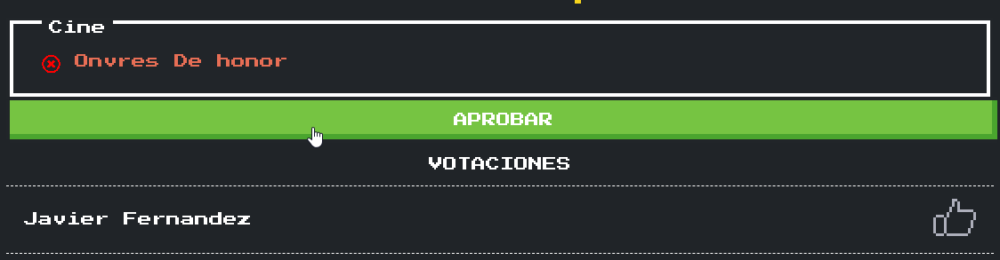
Respuesta válida: 10 puntos.
Respuesta no válida: 0 puntos.
Paso 14
Al terminar las correcciones presionar "Próxima Ronda"
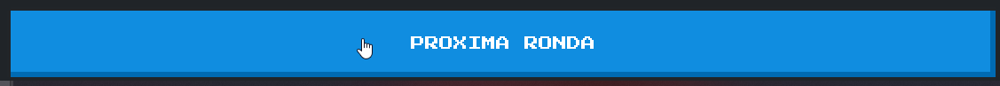
Paso 15
Se mostrará un cartel con el estado de revisión del resto de los jugadores.
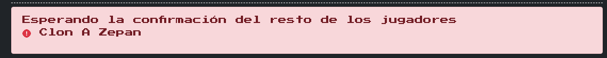
Cuando finalicen las revisiones, continuarán con la siguiente ronda hasta completar el juego.
Paso 16
Al finalizar el juego se muestran los resultados.
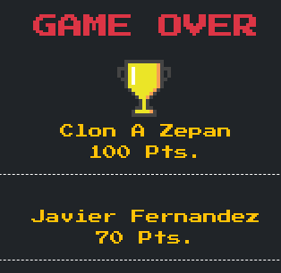